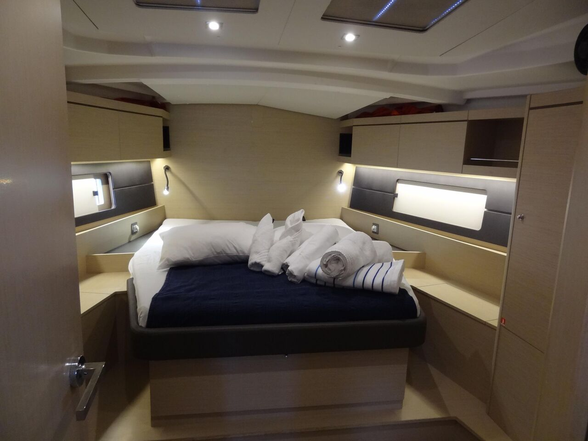
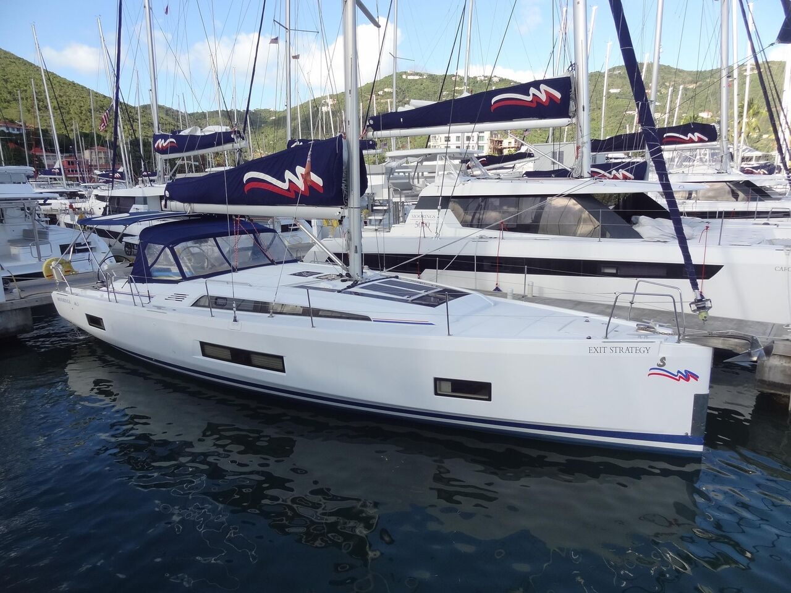
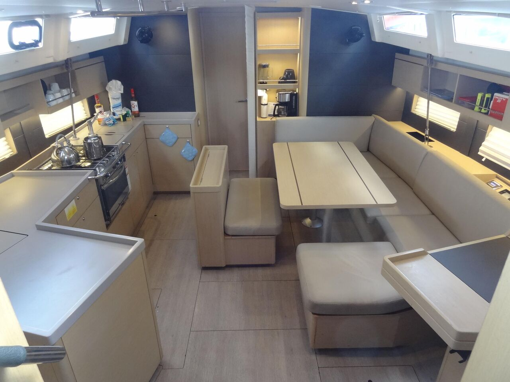

Честный тест-драйв Beneteau Oceanis 46.1: Французский шарм и гоночные гены
Детальный разбор сильных и слабых сторон «Европейской яхты 2019 года». Взгляд инженера на качество сборки Finot-Conq, итальянский стиль Nauta Design и реальные чартерные болячки.
⚓️ В двух словах: кто есть кто
Beneteau Oceanis 46 (2017–2020) — это 46-футовая (14.4 м) крейсерская яхта, ставшая прямым наследником сверхуспешной модели Oceanis 45. Этот период интересен тем, что в 2018 году модель сменила поколение, превратившись в революционную Oceanis 46.1, которая в том же году получила престижную награду «European Yacht of the Year» в категории «Семейный круизёр».
В отличие от Bavaria, ориентированной на чартерную прагматичность, и Elan с его трепетным отношением к традиционному управлению парусами, француз сделал ставку на то, чтобы объединить необъединимое: гоночный характер и комфорт полноценного плавучего дома. За корпус отвечало легендарное бюро Finot-Conq, а за интерьер — итальянское ателье Nauta Design. Результат — одна из самых продаваемых лодок в своём классе и настоящий хит вторичного рынка.
📊 Технические характеристики
📸 Фотохроника и интерьер



👍 Сильные стороны: за что мы ценим Oceanis 46
Ходовые качества и управляемость: Это не просто «крейсер», а настоящий **Performance Cruiser**. Finot-Conq создали корпус с характерными «скулами» (ступенчатый корпус) и широкой кормой, что обеспечивает невероятную остойчивость формы. Яхта отлично держит курс, оставаясь сбалансированной и отзывчивой на порывы. На галфвинде при 10–15 узлах она уверенно держит **6.5–7.5 узлов** и способна разгоняться до **9+ узлов** на порывах.
Интерьер и жилое пространство: Интерьер, разработанный итальянским ателье Nauta Design, кардинально отличается от спартанских Bavaria или традиционных Elan. Огромные панорамные окна по бортам («picture windows») наполняют салон дневным светом. Владельческая каюта в носу предлагает полноценный островной блок и раздельный санузел. Узлы и механизмы (например, закрутка грота в мачте) продуманы так, чтобы вы тратили время на отдых, а не на возню с парусами.
Конструкция и эргономика: Корпус изготавливается из стеклопластика со структурной сеткой внутри для жёсткости. Управление вынесено на посты рулевого: все шкоты и фалы заведены на лебёдки у штурвалов. Электрическая открывающаяся транцевая платформа превращает корму в просторную террасу, идеальную для выходов в море.
👎 Слабые стороны и болевые точки
- ⚠️ Проблемы рулевого: Известны проблемы с перьями руля и румпельным устройством, особенно при интенсивной чартерной эксплуатации.
- ⚠️ Фурнитура и электроника: Мелкая фурнитура (защёлки, замки) выходит из строя довольно быстро. Встречаются жалобы на неисправные индикаторы на панели управления и некорректную заводскую разводку. Подруливающее устройство — необходимость.
- ⚠️ Чартерная усталость: Яхты из аренды часто имеют изношенную обивку, подтекающие краны и неработающие холодильники.
💎 Вердикт
Beneteau Oceanis 46.1 — это «идеальный шторм» на рынке круизных яхт. Она создана для тех, кто не готов выбирать между скоростью и комфортом, попытка создать «спорткар для всей семьи». Если вы планируете частые выходы в море с семьёй, но при этом хотите лихо обходить соперников на любительских регатах — ваш выбор очевиден.
PS: При осмотре ищите версию **«First Line»** с более мощным вооружением и глубоким килем. Эта яхта остаётся одной из самых желанных на вторичном рынке — приходится платить премию.